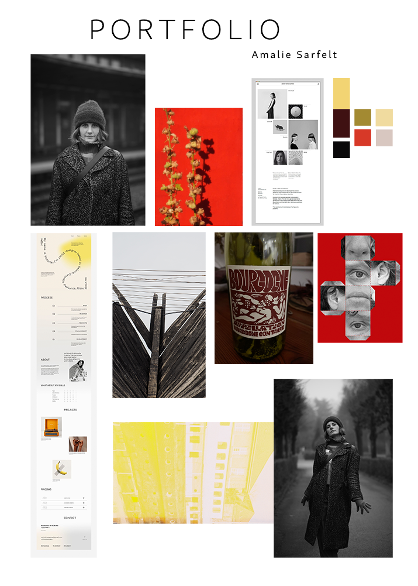

Portfolio process
Til dette projekt om at skabe et portfolio startede jeg ud med at lavedeskresearch. Jeg
ville finde
frem til, hvilke
tendenser man ser inden for web portfolier, hvilken stil jeg selv syntes var interessant og få noget
inspiration. Jeg
lagde meget tid i at finde de rettefonte, da jeg mener fonte betyder meget for et site.
Tendenser viser
også typografi
der fylder det meste af skærmen, leg med forskellige fonte og blandinger af fed og let vægt. Det var
altså det, jeg gik
efter. Derefter lagde jeg tid i at finde de rettefarver. Jeg ønskede at få klare og
tydelige farver og
en god kontrast.
Jeg valgte her gul og brun, sort og hvid. Jeg samlede farver, fonte og billeder, der viste min stil, på
etmoodboard.
Jeg brugte metodendesign sprint til at finde frem til et layout til mit site og skabe
wireframes til
alle sider på mit
portfolio. Jeg endte med at vælge et layout hvor elementerne lå nær hinden i lukkede bokse og brugte
altså lovene om
nærhed og lukkethed inden for gestaltlovene. Jeg lavede tilsidst et mockup over mit site, på den måde
var det nemmere
for mig, da jeg skulle til at kode.
Jeg ønskede at bruge JavaScript til at skabe en dynamisk forside, hvor bogstaverne bevægede sig. Da jeg
ikke havde lavet
et statemachine diagram inden jeg gik igang, blev det svært for mig at udføre.
Til at planlægge projektet havde jeg, inden jeg gik igang, lavet en todo liste over alt sitet skulle
indeholde og alle
elementer, jeg skulle implementere.

Se
designprocess